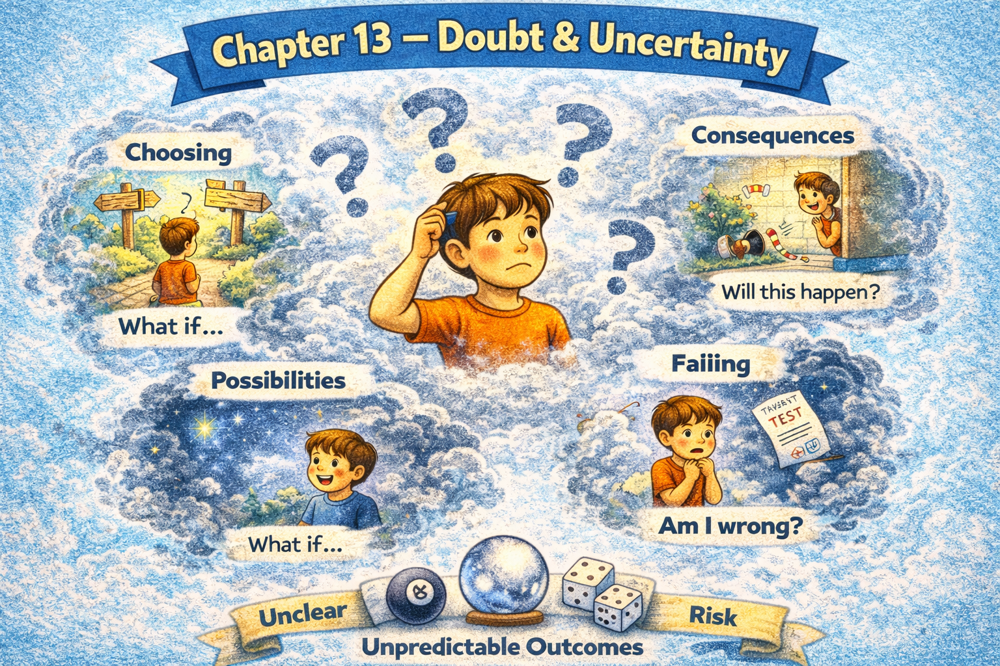

Chapter 13 — Doubt & Uncertainty

Micro Scene 1 — Expressing Doubt
1️⃣ Scene Text
Sometimes I question whether my conclusion is fully justified.
I am not entirely certain that the evidence is sufficient.
There may be factors I have overlooked.
If important variables remain unexamined, the outcome could differ.
Doubt does not negate progress; it refines it.
I hesitate when assumptions feel unstable.
Uncertainty invites further investigation.
If confidence decreases, analysis deepens.
Doubt slows impulsive judgment.
It introduces caution into evaluation.
Measured doubt strengthens credibility.
2️⃣ Core Verb Pool
question
justify
remain
overlook
differ
negate
refine
hesitate
invite
decrease
deepen
introduce
strengthen
3️⃣ Structure Patterns
Sometimes I + verb whether + clause
I am not entirely + adjective that + clause
There may be + noun
If X + verb, Y could + verb
X does not + verb; it + verb
If X + verb, Y + verb
4️⃣ Replace & Extend
Replace the uncertainty:
I am not entirely certain.
→ I am not fully convinced.
→ I remain unsure.
Replace the overlooked factor:
There may be variables I missed.
→ There may be assumptions untested.
→ There may be hidden dependencies.
Replace the refinement:
Doubt refines thinking.
→ Skepticism improves reasoning.
→ Caution strengthens analysis.
5️⃣ Spoken Mode
I’m not completely sure.
There might be something I’ve missed.
If I haven’t looked at all the variables, the result could change.
Doubt doesn’t mean I’m wrong — it means I’m thinking carefully.
🔎 Structural Notes
• “not entirely certain” softens claim.
• “may / could” expresses probability.
• Doubt is framed as cognitive refinement.
Micro Scene 2 — Degrees of Certainty
1️⃣ Scene Text
Not all conclusions carry the same level of certainty.
Some outcomes are highly probable, while others remain speculative.
I distinguish between what is likely, possible, and merely hypothetical.
If the evidence is strong, confidence increases.
If the data is incomplete, conclusions remain tentative.
Probability exists on a spectrum rather than as a binary state.
Absolute certainty is rare outside of formal logic.
Most real-world decisions operate under partial knowledge.
The degree of certainty determines the strength of commitment.
Measured language reflects calibrated confidence.
Precision requires acknowledging uncertainty levels.
2️⃣ Core Verb Pool
carry
remain
distinguish
increase
operate
determine
reflect
require
acknowledge
3️⃣ Structure Patterns
Not all X + verb
Some…, while others…
I distinguish between A, B, and C
If X + verb, Y + verb
X exists on a spectrum
X determines + noun
X requires + noun
4️⃣ Replace & Extend
Replace probability:
It is highly probable.
→ It is likely.
→ It is possible.
→ It is unlikely.
Replace the spectrum:
Confidence exists on a spectrum.
→ Risk exists on a continuum.
→ Clarity exists in degrees.
Replace the commitment:
The degree of certainty determines commitment.
→ The level of risk determines caution.
→ The strength of evidence determines confidence.
5️⃣ Spoken Mode
I’m fairly confident.
It’s likely, but not guaranteed.
It’s possible, though not certain.
Most decisions aren’t black and white.
Confidence comes in degrees.
🔎 Structural Notes
• “likely / possible / speculative” mark probability tiers.
• “exists on a spectrum” avoids binary framing.
• “measured language” signals epistemic maturity.
Micro Scene 3 — Questioning Assumptions
1️⃣ Scene Text
Many conclusions rest on underlying assumptions.
I question whether those assumptions are valid.
If a premise is flawed, the conclusion may collapse.
Some beliefs persist simply because they remain unchallenged.
I examine what I am taking for granted.
If an assumption goes unnoticed, it shapes reasoning invisibly.
Doubt exposes hidden premises.
Challenging assumptions does not reject them automatically; it tests them.
When assumptions are verified, confidence increases legitimately.
When they are invalidated, revision becomes necessary.
Questioning assumptions strengthens intellectual integrity.
2️⃣ Core Verb Pool
rest
question
remain
collapse
persist
examine
take for granted
shape
expose
challenge
test
verify
invalidate
strengthen
3️⃣ Structure Patterns
X rests on + noun
I question whether + clause
If X + verb, Y may + verb
X does not + verb; it + verb
When X + verb, Y + verb
X strengthens + noun
4️⃣ Replace & Extend
Replace the assumption:
The argument rests on assumptions.
→ The theory rests on prior models.
→ The strategy rests on projections.
Replace the flaw:
If the premise is flawed…
→ If the data is biased…
→ If the logic is inconsistent…
Replace the testing:
Challenging assumptions tests validity.
→ Scrutiny tests reliability.
→ Examination tests robustness.
5️⃣ Spoken Mode
I ask whether my assumptions are valid.
If the premise is wrong, the conclusion falls apart.
Some ideas stick around just because no one questions them.
Doubt helps me see what I’ve taken for granted.
Testing assumptions makes thinking stronger.
🔎 Structural Notes
• “rest on” signals structural dependency.
• “take for granted” marks unexamined belief.
• “invalidated” implies structural collapse.
Micro Scene 4 — Open-Ended Uncertainty
1️⃣ Scene Text
Some questions do not have definitive answers.
I accept that certain outcomes remain fundamentally unpredictable.
Even with analysis, ambiguity may persist.
If variables interact in complex ways, prediction becomes unreliable.
Uncertainty is not always temporary; sometimes it is structural.
I remain comfortable with incomplete resolution.
Open-ended problems require adaptive thinking.
When closure is unavailable, patience becomes essential.
I resist the urge to force premature conclusions.
Ambiguity invites exploration rather than avoidance.
Living with uncertainty requires emotional stability.
2️⃣ Core Verb Pool
have
accept
remain
persist
interact
become
require
resist
force
invite
avoid
live
3️⃣ Structure Patterns
Some X do not + verb
Even with + noun
If X + verb, Y + verb
X is not always + adjective; sometimes it is + adjective
When X + verb, Y becomes + adjective
Living with X requires + noun
4️⃣ Replace & Extend
Replace unpredictability:
Outcomes remain unpredictable.
→ Results remain uncertain.
→ Patterns remain unclear.
Replace structural uncertainty:
Uncertainty is structural.
→ Ambiguity is inherent.
→ Complexity is unavoidable.
Replace patience:
Patience becomes essential.
→ Flexibility becomes necessary.
→ Adaptation becomes required.
5️⃣ Spoken Mode
Some questions don’t have clear answers.
Even with analysis, things can stay uncertain.
If the situation’s complex, prediction gets unreliable.
I try not to force an answer too early.
Living with uncertainty takes stability.
🔎 Structural Notes
• “Even with…” introduces limitation of control.
• “resist the urge” signals disciplined restraint.
• Structural uncertainty differs from temporary ignorance.
Micro Scene 5 — Revising Beliefs
1️⃣ Scene Text
Beliefs are not fixed; they evolve over time.
When new evidence emerges, I reassess my position.
If contradictory data appears, I reconsider my conclusion.
Holding a belief too rigidly prevents growth.
Revision does not imply weakness; it reflects adaptability.
I differentiate between core principles and flexible opinions.
Some beliefs deserve stability, while others require adjustment.
If evidence accumulates consistently, resistance becomes irrational.
Intellectual maturity includes the ability to change one’s mind.
Updating belief strengthens long-term credibility.
Doubt creates space for revision.
2️⃣ Core Verb Pool
evolve
emerge
reassess
appear
reconsider
prevent
imply
reflect
differentiate
deserve
require
accumulate
include
update
strengthen
3️⃣ Structure Patterns
X are not + adjective; they + verb
When X + verb, Y + verb
If X + verb, Y + verb
X does not + verb; it + verb
Some X…, while others…
X includes + noun
4️⃣ Replace & Extend
Replace evolution:
Beliefs evolve.
→ Perspectives shift.
→ Interpretations change.
Replace reassessment:
I reassess my position.
→ I adjust my conclusion.
→ I refine my stance.
Replace rigidity:
Rigid belief prevents growth.
→ Fixed thinking blocks adaptation.
→ Closed perspective limits development.
5️⃣ Spoken Mode
Beliefs can change over time.
If new evidence shows up, I rethink my position.
Changing my mind doesn’t mean I’m weak.
Some values stay stable; some opinions adjust.
Updating beliefs makes me more credible.
🔎 Structural Notes
• “not…, they…” reframes misconception.
• “intellectual maturity includes…” defines capability.
• Revision is framed as strength.
Micro Scene 6 — Productive Doubt
1️⃣ Scene Text
Doubt becomes productive when it guides inquiry rather than paralysis.
I use uncertainty as a signal to investigate further.
If doubt leads to deeper analysis, it strengthens conclusions.
However, if it leads to avoidance, it weakens progress.
Productive doubt questions assumptions without rejecting them blindly.
It slows impulsive judgment but does not eliminate decision-making.
When uncertainty is acknowledged openly, discussion becomes more honest.
Constructive skepticism improves intellectual rigor.
Doubt can coexist with commitment.
Confidence and caution are not opposites; they are complements.
Productive doubt transforms hesitation into refinement.
2️⃣ Core Verb Pool
become
guide
use
lead
strengthen
weaken
question
reject
slow
acknowledge
improve
coexist
transform
3️⃣ Structure Patterns
X becomes + adjective when + clause
If X + verb, Y + verb
However, if X + verb, Y + verb
X does not + verb; it + verb
When X + verb, Y + verb
X and Y are not opposites; they are + noun
4️⃣ Replace & Extend
Replace paralysis:
Doubt leads to paralysis.
→ Uncertainty leads to inaction.
→ Hesitation leads to delay.
Replace complement:
Confidence and caution are complements.
→ Ambition and restraint are complements.
→ Speed and precision are complements.
Replace refinement:
Doubt refines conclusions.
→ Skepticism strengthens reasoning.
→ Inquiry deepens understanding.
5️⃣ Spoken Mode
Doubt is useful if it pushes me to think deeper.
If it helps me analyze more carefully, it’s productive.
But if it stops me from acting, it becomes a problem.
Confidence and caution can exist together.
Good doubt makes thinking stronger.
🔎 Structural Notes
• “rather than” contrasts direction of doubt.
• “not opposites; they are complements” reframes polarity.
• Doubt is repositioned as structural tool.
🔸 Integration Scene — Structure of Uncertainty
Certainty exists in degrees.
Doubt questions assumptions.
Probability replaces absolutes.
Uncertainty may be temporary or structural.
Beliefs evolve with evidence.
Confidence requires calibration.
Productive doubt refines reasoning.
Excessive doubt weakens action.
Revision strengthens credibility.
Ambiguity invites investigation.
Open-mindedness preserves flexibility.
Premature certainty limits growth.
Measured language reflects intellectual maturity.
Strong reasoning acknowledges uncertainty.
Clarity emerges through questioning.
Doubt, when structured, becomes strength.
Integration Verb Focus
question
calibrate
acknowledge
revise
refine
evolve
investigate
strengthen